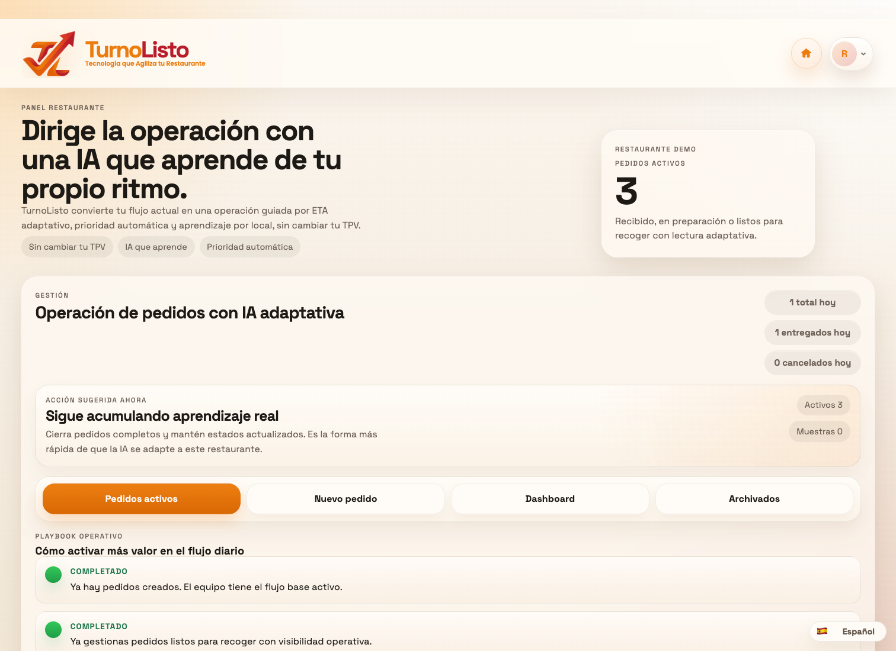
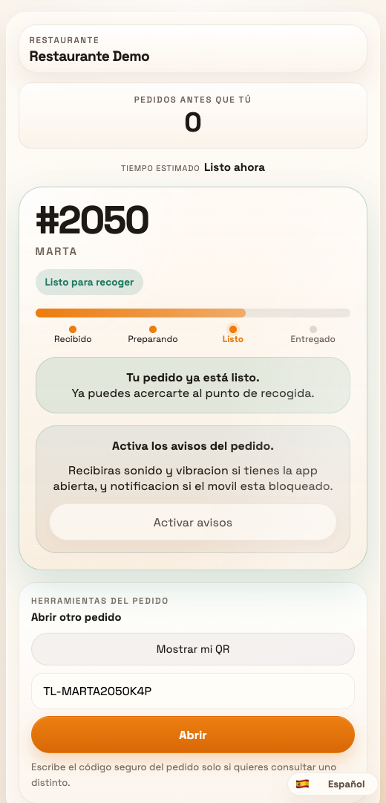

Sin hardware dedicado
TurnoListo para restaurante y cliente
La experiencia del pedido, ahora en software.
TurnoListo conecta restaurante y cliente sin hardware dedicado, con una operación clara y seguimiento visible desde el móvil.


Operación clara
Una vista real para restaurante y otra para cliente.
Escala como software
Más experiencia con menos complejidad física.
Restaurant
Control claro para cada pedido.
La operación ve lo importante primero: estado, prioridad y ritmo del servicio desde un panel que ya se siente listo para trabajar.
- Vista operativa real
- Menos fricción para el equipo
- Preparado para crecer sin hardware tradicional
Client
Seguimiento simple desde el móvil.
El cliente ve el estado del pedido, el progreso y la recogida sin depender de otro dispositivo físico para enterarse.
- Estado visible en tiempo real
- QR y móvil como experiencia principal
- Menos espera opaca, más claridad
Comparativa
Del hardware tradicional al software conectado.
Lo que antes dependía de otra capa física ahora vive dentro de una experiencia de producto más ligera y agradable.
Hardware tradicional
Más compra. Más instalación. Más fricción.
Avisos, recogida y seguimiento dependen de hardware tradicional añadido al flujo.
TurnoListo
Una experiencia unificada desde el primer día.
El restaurante opera y el cliente sigue su pedido desde software, sin hardware dedicado.
Cómo funciona
Tres pasos. Una experiencia mejor.
El restaurante actualiza.
Una sola interfaz mueve el pedido con claridad.
El cliente lo sigue.
La información llega por móvil y QR, no por hardware tradicional.
El negocio escala.
Más experiencia y menos complejidad física para crecer.
Solicitar demo
Haz que la espera se sienta moderna.
Si quieres ver cómo TurnoListo reemplaza hardware tradicional por una experiencia conectada entre restaurante y cliente, el siguiente paso es una demo.